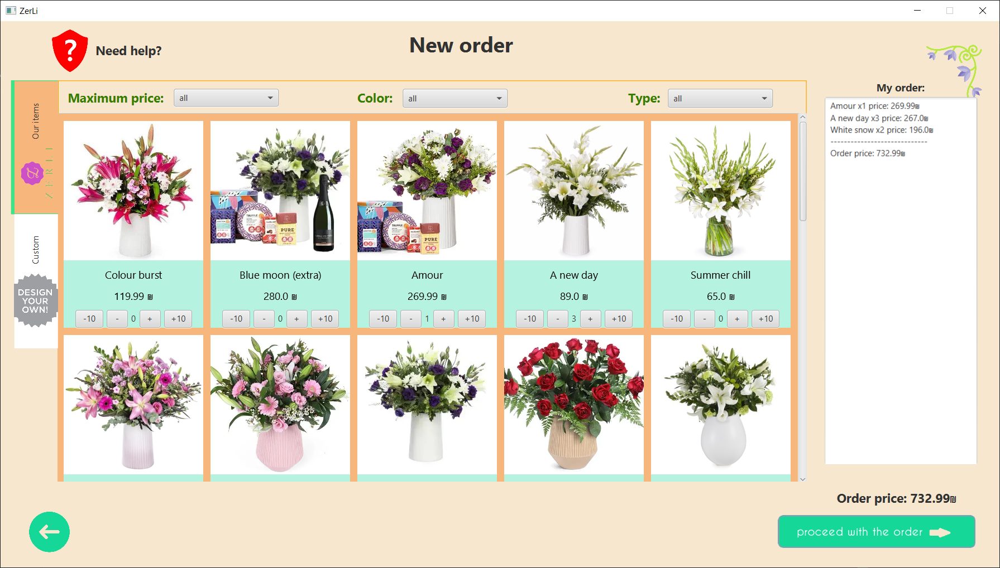
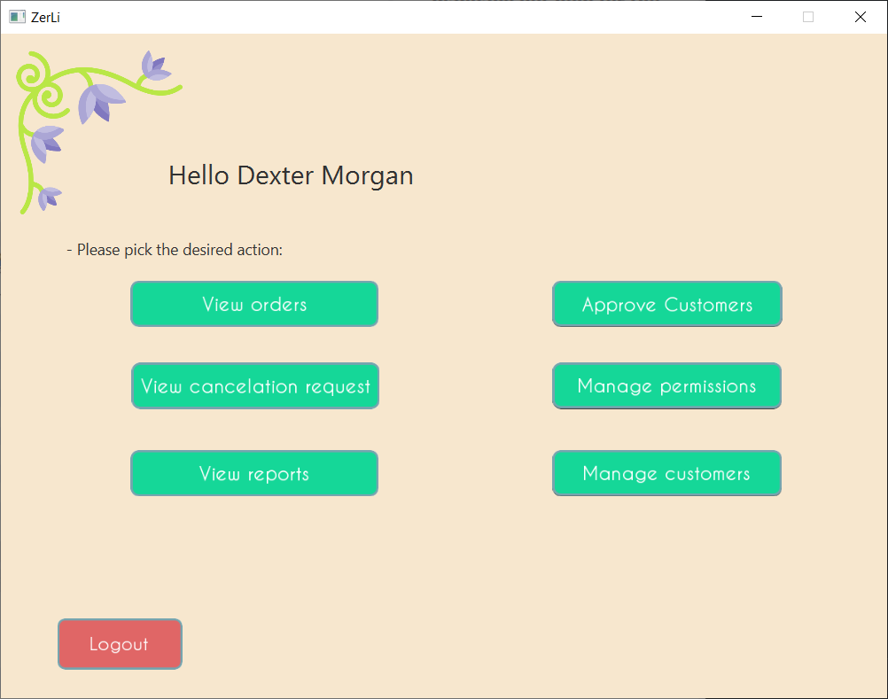
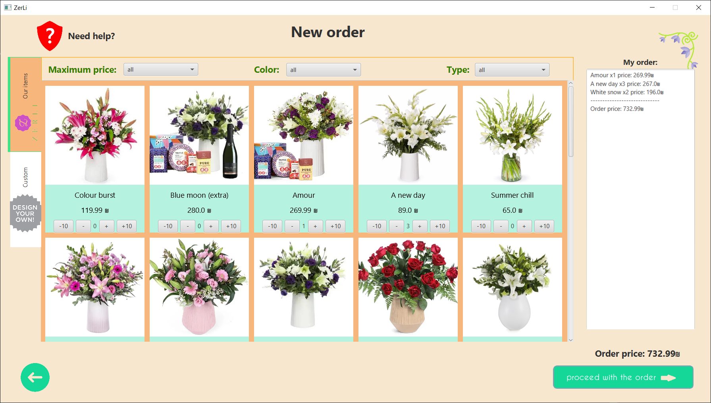
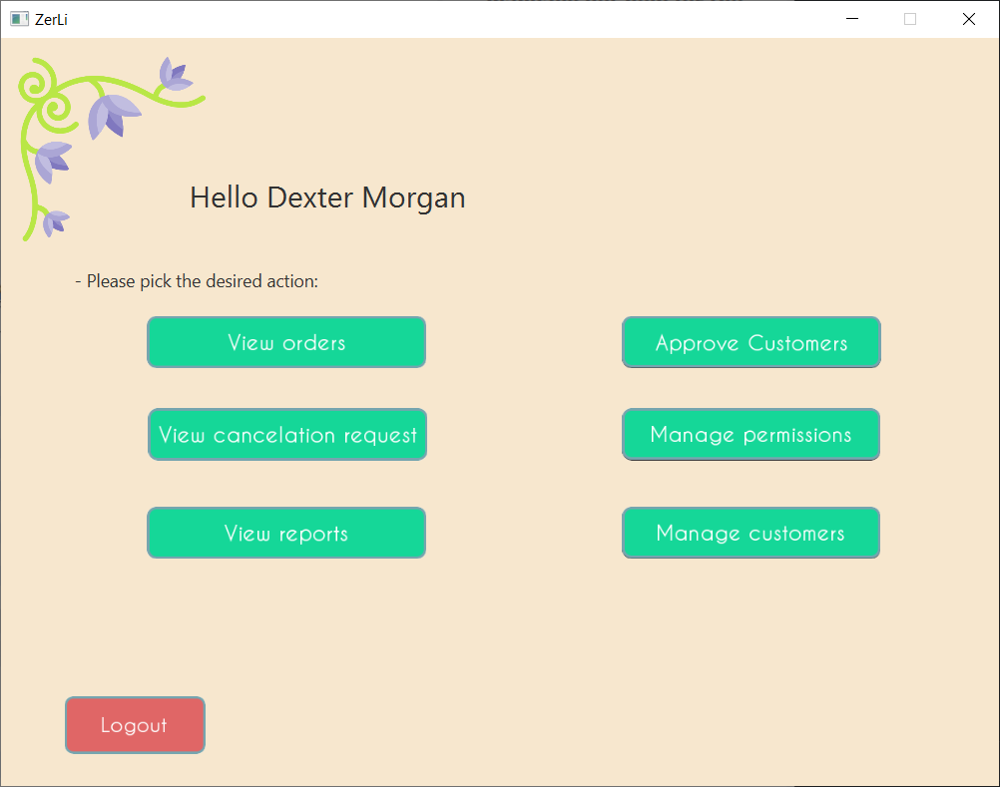

Zerli – House of Flowers
Project Overview
- Tech: Java, JavaFX, MySQL, OCSF
- Type: Client-Server Desktop App
- Features: Login system, product catalog, order management, role-based views
- Year: 2023
My Role
- Implemented database integration for reading and writing data between the application and MySQL
- Developed UI components and interactive buttons using JavaFX
- Implemented business logic behind UI actions (create, update, retrieve)
- Built manager-side features including reports and management views
- Worked on the client-server data flow and handling server responses
- Improved usability and functionality of the management interface
Technical Highlights
- UI state management in JavaFX
- Client-server pattern using OCSF
- Persistent storage via MySQL
- Networked request/response architecture
UI Screens

 




Sample screens from the application